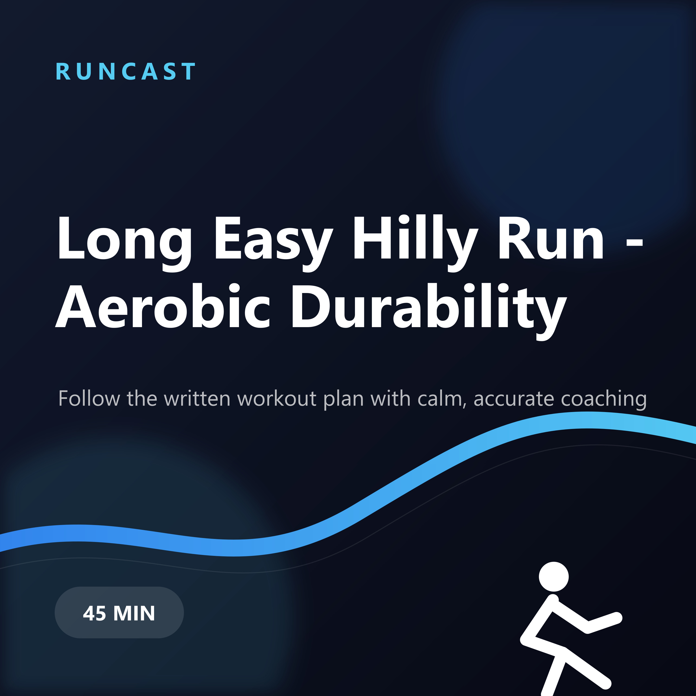
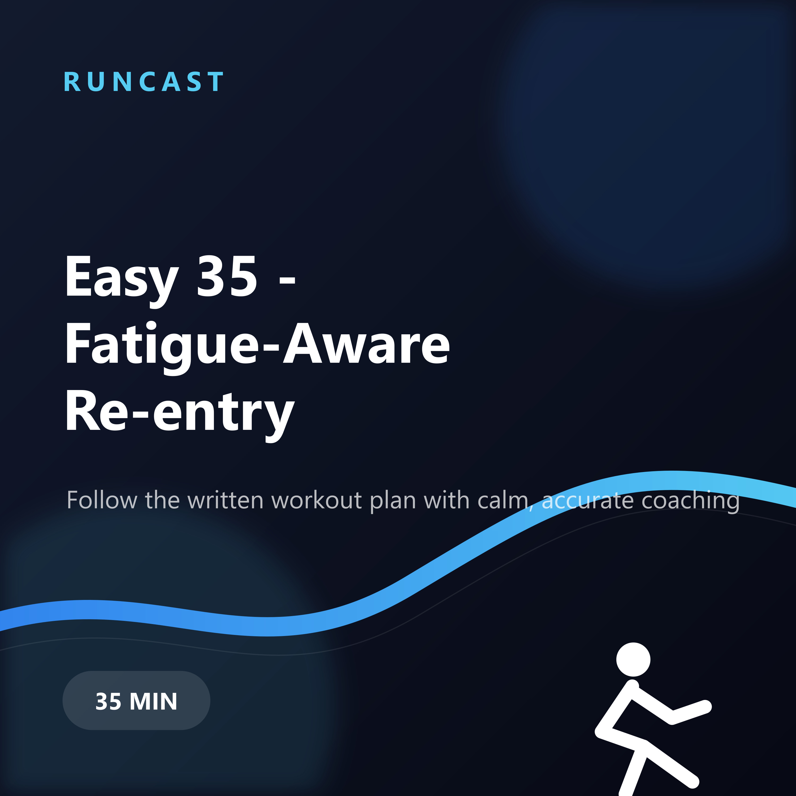
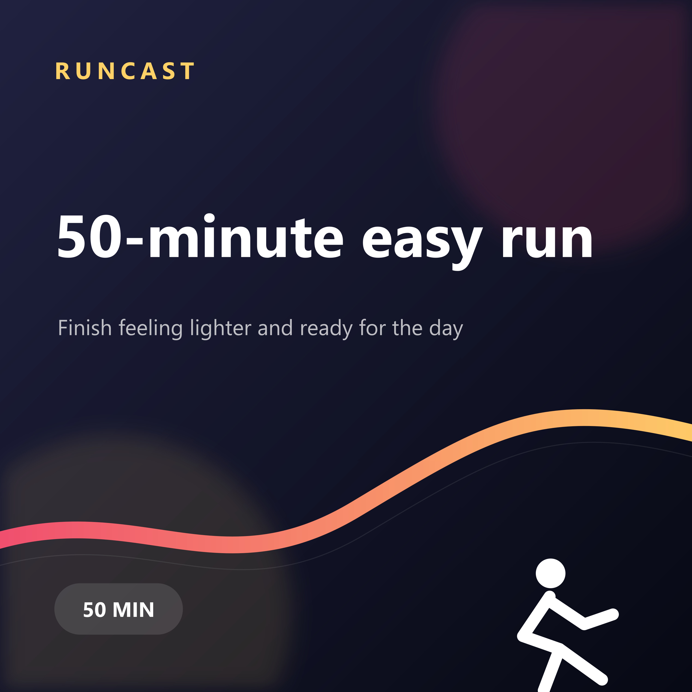
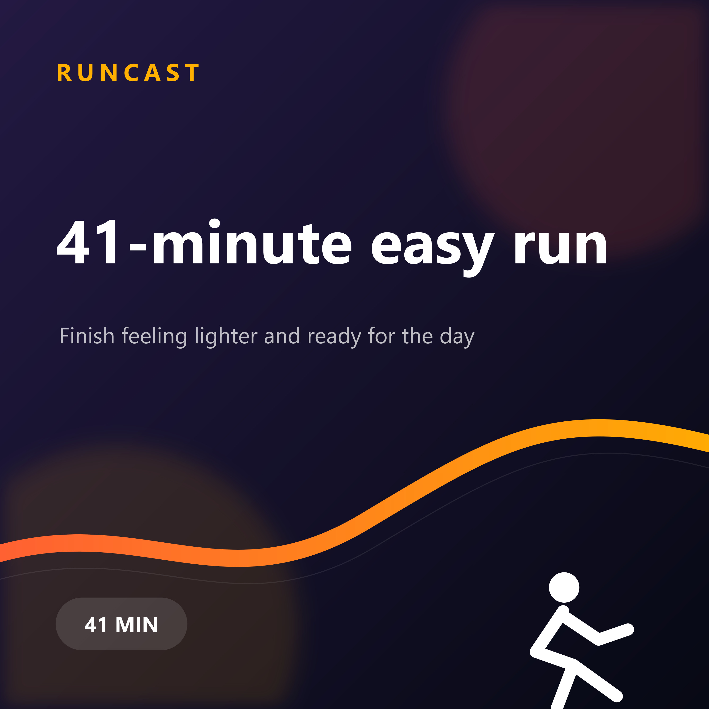
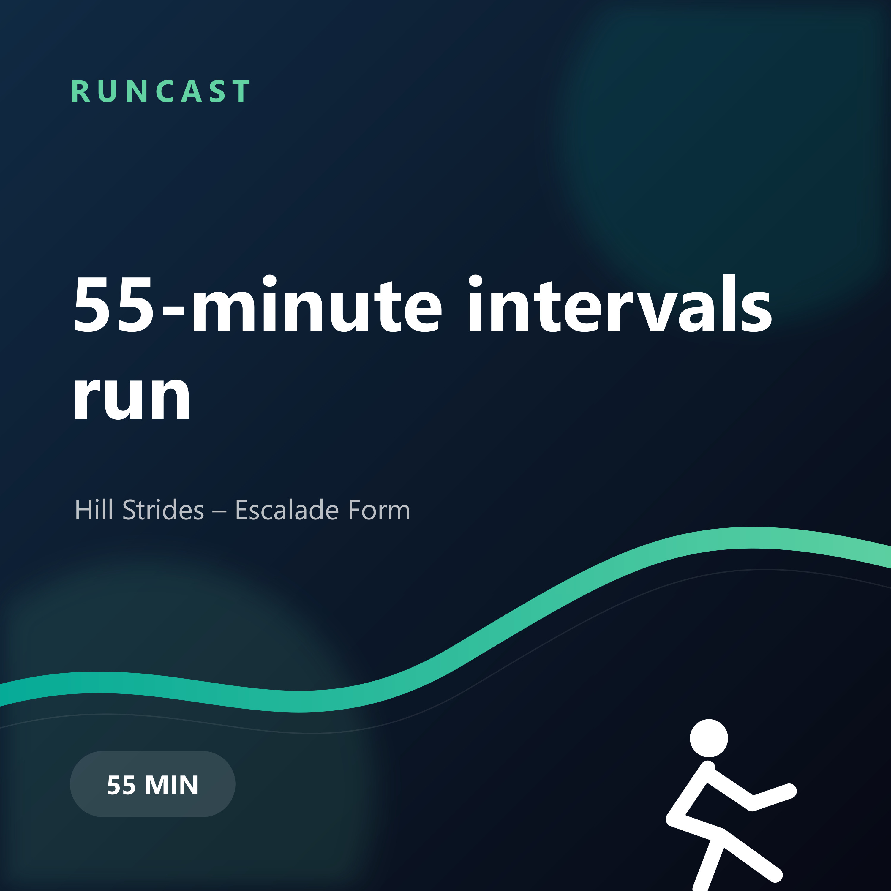
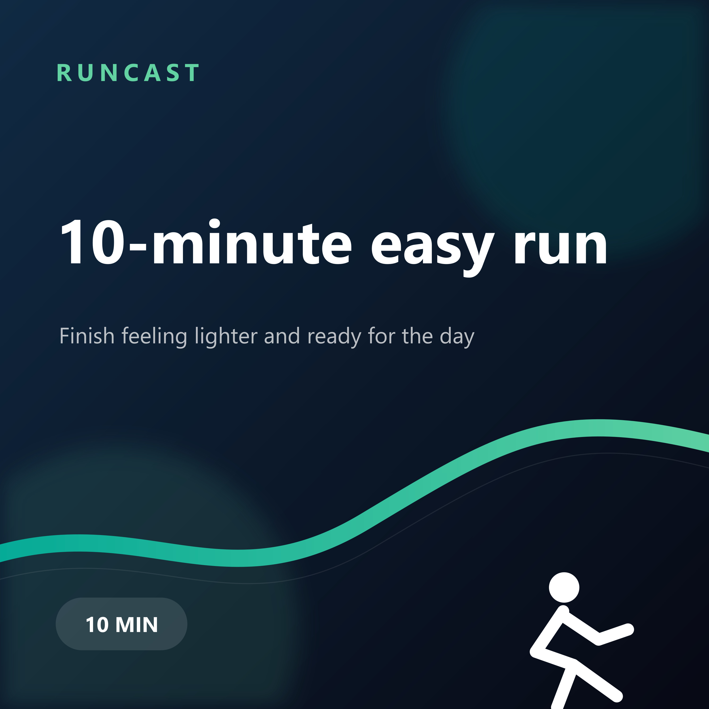

Aug 10, 2026
Long Easy Hilly Run - Aerobic Durability
Follow the written workout plan with calm, accurate coaching. A 45-minute custom run with personalized coaching.
Personal guided runs, mixed and published by RunCast.
Podcast RSS feed
Aug 10, 2026
Follow the written workout plan with calm, accurate coaching. A 45-minute custom run with personalized coaching.

Aug 7, 2026
Follow the written workout plan with calm, accurate coaching. A 35-minute custom run with personalized coaching.

Jul 26, 2026
Finish feeling lighter and ready for the day. A 50-minute easy run with personalized coaching.

Jul 22, 2026
Finish feeling lighter and ready for the day. A 41-minute easy run with personalized coaching.

Jul 12, 2026
Hill Strides – Escalade Form. A 55-minute intervals run with personalized coaching.

Jul 11, 2026
Finish feeling lighter and ready for the day. A 50-minute easy run with personalized coaching.

Jul 11, 2026
Finish feeling lighter and ready for the day. A 10-minute easy run with personalized coaching.